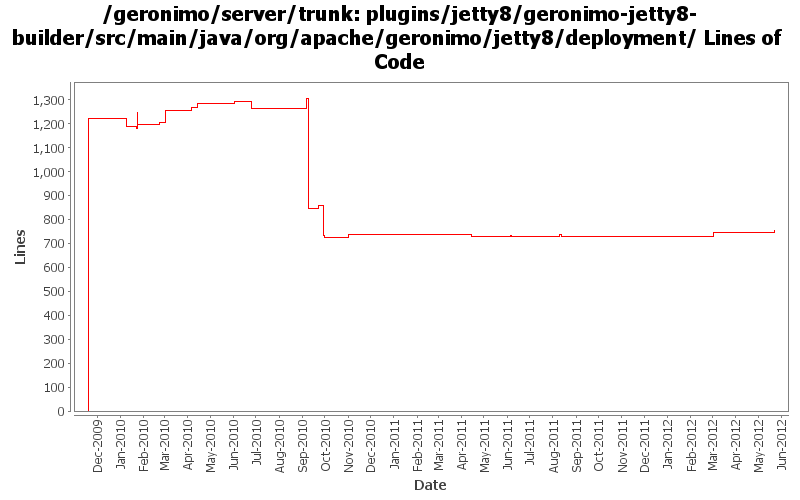

[root]/plugins/jetty8/geronimo-jetty8-builder/src/main/java/org/apache/geronimo/jetty8/deployment

| Author | Changes | Lines of Code | Lines per Change |
|---|---|---|---|
| Totals | 48 (100.0%) | 2098 (100.0%) | 43.7 |
| djencks | 24 (50.0%) | 1773 (84.5%) | 73.8 |
| gawor | 9 (18.8%) | 203 (9.7%) | 22.5 |
| xuhaihong | 13 (27.1%) | 121 (5.8%) | 9.3 |
| genspring | 2 (4.2%) | 1 (0.0%) | 0.5 |
Merge changes from GERONIMO-6341 orm.xml does not take effect in latest Geronimo 3.0 beta branch.
12 lines of code changed in 1 file:
GERONIMO-6292 Share the japser servlet between jasper plugin and web-container plugin.
29 lines of code changed in 1 file:
GERONIMO-6204 Decouple OpenWebBeans from web container
2 lines of code changed in 1 file:
GERONIMO-6143 Create a fragment context for each sub modules in the EAR package
4 lines of code changed in 1 file:
GERONIMO-6106 Clean up temp files created in the deployment process
Use a thread local in the FileUtils to hold all the temp files in the deployment process
0 lines of code changed in 1 file:
GERONIMO-6106 Clean up temp files created in the deployment process
6 lines of code changed in 1 file:
GERONIMO-5050 Continue integrating use of openejb owb integration
1 lines of code changed in 1 file:
re-enable the message-destination handling logic for spec and vendor DD.
0 lines of code changed in 1 file:
a. Update the WebAttributeNames in the geronimo-web module to WebApplicationConstants
b. Update the WebApplicationConstants in the geronimo-wab module to WABApplicationConstants
5 lines of code changed in 1 file:
move schema conversion "openejb-jar" from SchemaConversoinUtils to jetty/tomcat builders.
1 lines of code changed in 1 file:
GERONIMO-5902 Ignore web service from web application side if it is also an EJB web service
11 lines of code changed in 1 file:
GERONIMO-5050 use single owb lifecycle and context in jetty, fix a couple small problems
42 lines of code changed in 1 file:
GERONIMO-5647 avoid an NPE in jetty if no security realm is specified anywhere
2 lines of code changed in 1 file:
GERONIMO-5624 add more goo to WebAppInfo, use in jetty
9 lines of code changed in 1 file:
GERONIMO-5624 better default web app merging, and make jetty use more of the info tree
21 lines of code changed in 1 file:
GERONIMO-5624 patch (slightly modified) from Ivan to use info tree to merge security info from dynamic additions and annotations (this is new for jetty).
17 lines of code changed in 1 file:
GERONIMO-5567 clean up unused classes and code
21 lines of code changed in 1 file:
GERONIMO-5567 fix some more integration issues with Registration based web.xml processing. Functional but needs cleanup.
10 lines of code changed in 1 file:
GERONIMO-5567 rewrite jetty integration to use a openejb-like info tree and the *Registration interfaces. This gets everything started in the right order and is a lot simpler. Old code still needs to be removed
152 lines of code changed in 1 file:
cf openejb rev 958340. marshal persistence.xml in the correct namespace, marshal methods names changed
2 lines of code changed in 1 file:
GERONIMO-5190 use openejb-jee jaxb tree for spec dds
162 lines of code changed in 1 file:
GERONIMO-5025, GERONIMO-5117. Make jndi supported directly by Modules and straighten out which contexts are shared when.
13 lines of code changed in 1 file:
Fix jaspic message layer name for servlet profile
1 lines of code changed in 1 file:
a. Calculate web permissions while starting the web module to support setServletSecurity feature in Servlet 3.0
b. Initial support ServletContainerInitializer, some improvements might be needed, such as use ASM ?
c. Support ORDERED_LIBS ServletContext attribute
9 lines of code changed in 1 file:
XBEAN-148 use new xbean-bundleutils
1 lines of code changed in 1 file:
cf OPENEJB-1252 replace file.toURL() with file.toURI().toURL()
1 lines of code changed in 1 file:
fix compilation problem
1 lines of code changed in 1 file:
GERONIMO-5253: Publish application name to JNDI (java:app/AppName)
17 lines of code changed in 1 file:
1. Make sure we only reassemble the DD of the version after 2.5
2. Ignore the same param-name configurations checking in the same DD file (web-fragment.xml/web.xml)
5 lines of code changed in 1 file:
GERONIMO-5150 type safe shared data in EARContext
2 lines of code changed in 1 file:
GERONIMO-5037 Support Servlet 3.0 annotation and fragment web file
32 lines of code changed in 1 file:
GERONIMO-5030: Fragment bundles must also be considered when looking up resources
2 lines of code changed in 1 file:
GERONIMO-5030: Make sure ServletContext is registered in service registry after the web app context is fully initialized - take 2. Register gbean with lowest priority so that it starts last and causes the ServletContext to be registered
62 lines of code changed in 1 file:
revert most of 918095. it's causing some other problems with filters.
10 lines of code changed in 1 file:
GERONIMO-5030: Make sure ServletContext is registered in service registry after the web app context is fully initialized. That is, start web app context after all dependent servlet gbeans are started
18 lines of code changed in 1 file:
Merge with ear environment if we are using onely one bundle
7 lines of code changed in 1 file:
GERONIMO-5057 Use those xmlbeans generated by JAVA EE 6 schema files
1 lines of code changed in 1 file:
make sure the deploymentDescriptor attribute has the right root element
1 lines of code changed in 1 file:
GERONIMO-4996 GERONIMO-5025 separate jndi context setup from web app context since jsf needs it too. Hook up myfaces which now starts. Don't know if myfaces works
8 lines of code changed in 1 file:
GERONIMO-5030: Initial refactoring of some of the module deployment code to support deployment of Bundles. Also, implemented rfc66 extender that can actually deploy WABs with simple servlets and jsps.
81 lines of code changed in 1 file:
(8 more)